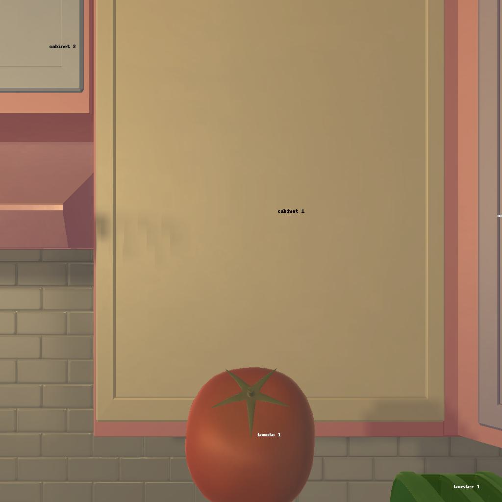

---------------------------------------------------------task: 29---------------------------------------------------------
--------------------------------------------------------------------------------------------------------------------------------------------------------------------
--------------------------------------------------------------------------------------------------------------------------------------------------------------------
Step:--------------------------------------------------------------------------5-------------------------------------------------------------------------------
----------------------------------------
VLM Prompt:
Image1:
Image2:
**Instruction**
1. Analyze the provided image to identify all visible household objects, focusing on those relevant to the task description "find two tomato and put them in countertop."
2. Use the analysis of the image and the task hint "The agent must find an object of the desired type, pick it up, find the correct location to place it, put it down there, then look for another object of the desired type, pick it up, return to previous location, and put it down there with the other object." to answer the question: what is the most reasonable action in the choices for the task description "find two tomato and put them in countertop"?
4. Decide and write the answer using the template: The answer is: (i): , where i is the real number. If there is no desired object in the image, search every place based on **Initial Observation** to find the object. And if no one is exactly correct, choose a similar answer.
**Initial Observation**
You are in the middle of a room. Looking quickly around you, you can see cabinet (1-20), toaster (1), microwave (1), garbagecan (1), countertop (1-2), drawer (1-4), stoveburner (1-4), sinkbasin (1), sink (1), fridge (1), diningtable (1), coffeemachine (1)
**Answer Choices**
(1): go to cabinet 2
(2): go to toaster 1
(3): go to cabinet 4
(4): go to cabinet 5
(5): go to microwave 1
(6): go to garbagecan 1
(7): go to countertop 1
(8): go to drawer 1
(9): go to cabinet 6
(10): go to cabinet 7
(11): go to drawer 2
(12): go to stoveburner 1
(13): go to stoveburner 2
(14): go to cabinet 8
(15): go to cabinet 9
(16): go to cabinet 10
(17): go to drawer 3
(18): go to drawer 4
(19): go to stoveburner 3
(20): go to stoveburner 4
(21): go to cabinet 11
(22): go to cabinet 12
(23): go to cabinet 13
(24): go to cabinet 14
(25): go to sinkbasin 1
(26): go to sink 1
(27): go to cabinet 15
(28): go to fridge 1
(29): go to cabinet 16
(30): go to cabinet 17
(31): go to cabinet 18
(32): go to cabinet 19
(33): go to diningtable 1
(34): go to coffeemachine 1
(35): go to cabinet 20
(36): open cabinet 1
(37): close cabinet 1
(38): put tomato 1 in/on cabinet 1
(39): examine tomato 1
(40): examine cabinet 1
**Answer**
Let's think step by step by following the instructions.
----------------------------------------
----------------------------------------
Original Response:
The task is to find two tomatoes and put them on the countertop. Based on the image provided, we can see "tomato 1" is already visible and on a surface that resembles a countertop. Since there is only one tomato visible and the task requires two, the agent must search for another tomato. The most reasonable action would be to look in locations where a tomato might be found, typically in cabinets or the fridge.
Looking at the initial observation, we can rule out certain locations like the toaster, microwave, garbage can, sink basin, sink, and coffee machine as these are unlikely places to store a tomato. We can also rule out the stove burners and dining table as these are not storage locations.
Since we know cabinet 1 is already open and does not contain the tomato, we can rule out actions (36) and (37) as well. Action (38) is not reasonable because the task is to put the tomatoes on the countertop, not in or on a cabinet. Actions (39) and (40) are examination actions and do not progress the task of finding another tomato.
Given the information and the answer choices, the most reasonable next action would be to search the cabinets starting from the lowest number available that has not been checked yet. Since we know cabinet 1 is open and does not contain a tomato, the next logical step is to check the following cabinet, which is cabinet 2.
The answer is: (1): go to cabinet 2.
----------------------------------------
----------------------------------------
>>> Refine Original VLM Response and Get Pure Action: go to cabinet 2
----------------------------------------
-----------------------------------------------------------------
Running time: 12.620312213897705 seconds
Total Money: 14.461370000000004
-----------------------------------------------------------------
-----------------------------------------------------------------
Text Observation:You arrive at loc 1. The cabinet 2 is closed.
-----------------------------------------------------------------
UNSUCCEED